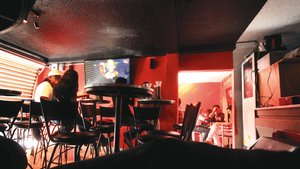
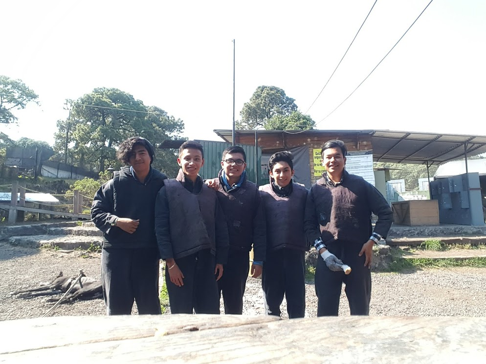
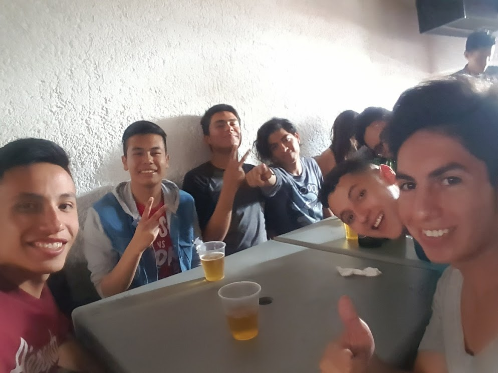
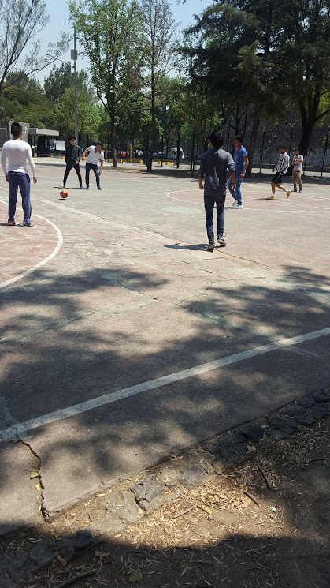
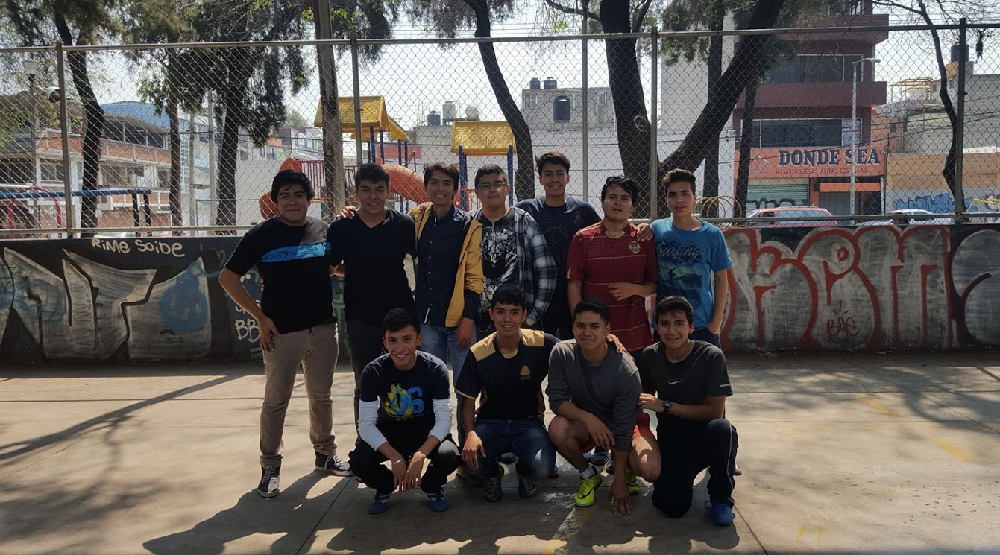
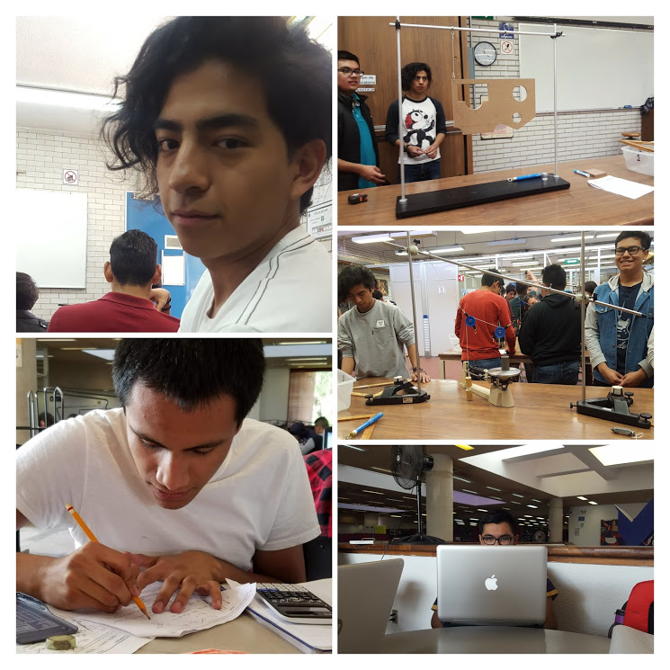

April 25, 2017
Si mi memoria no falla...
La primera ocasión en la que salí con ellos fuimos al ahora extinto café 76, donde pasamos una tarde agradable, ya que habían "terminado" las clases.
Salimos un tanto ebrios del lugar


Este ha sido el último lugar al que hemos salido, fue una gran experiencia porque nunca había practicado esta actividad.
Ese día salí con un par de moretones propiciados por mis "amigos".

En esta oportunidad fuimos a una plaza que se ubica cerca del metro Buenavista (línea B del metro para los que no son "prole") en donde pasamos una gran tarde en dicho lugar pues jugamos hasta que surgieron algunos problemas con la mesa de billar y poco después fuimos a comer unas alitas en "Wings Army"

Ay caribe...
Sin duda alguna este ha sido uno de los días más... patéticos para mí, ya que dicho lugar fue sede de la mayor "peda" que me he puesto, ala imagen que aprecian a continuación habla por si sola.
No olvidaré ese lugar(porque todo lo que ocurrió ese día si lo olvidé, literalmente :v)

Si pudiera elegir el lugar donde más me divertía con ellos sin duda serían las canchas.
Al menos 10 de las 16 semanas que comprende un semestre en la Facultad estuvimos allí, y vaya que era divertido porque nunca faltaban caídas o algo que nos hiciera reir.

Como verán, el fútbol es un deporte que me apasiona tanto a mí como a la mayoría de mis amigos y gracias a eso es que nos hemos mantenido en contacto.
Tal vez los amigos de la preparatoria estén regados pos las Facultades o incluso en escuelas ajenas a la UNAM, pero sin duda alguna el fútbol ha sido la razón por la que aún los veo.

Tal vez suene un poco cursi al decrilo pero... no hallo otro término para descrbirlos.
Agradezco el apoyo de cada uno de ellos y también el hecho de que estén presentes en mi vida.
¡Bendita sea la escuela!